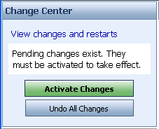

Sesión 1 de ejercicios EJB - Introducción a los enterprise beans
Los ejercicios de esta sesión van a centrarse en el despliegue y uso de los enterprise beans. Vamos a trabajar con un sencillo ejemplo de bean de sesión sin estado, el bean SaludoBean, al que vamos acceder desde un cliente remoto (una aplicación Java) y desde una aplicación Web situada en la misma unidad de despliegue.
Guía rápida del ejercicio (detallamos cada paso más adelante):
- Descargar el fichero ZIP con los ejemplo de esta sesión de ejercicios.
- Crear el dominio ejb de WebLogic.
- Desplegar en el dominio el bean ejb-saludo.jar, que contiene el EJB SaludoBean.
- Crear en Eclipse el proyecto ejb-cliente-saludo y comprobar distintas formas de llamar al bean.
- Eliminar el EJB del servidor y desplegar el paquete ejb-saludoWebEAR.ear que contiene una aplicación web y un EJB; probar el cliente Java y la aplicación web.
Descarga de los ejemplos
El fichero ZIP con los ejemplos contiene los siguientes ficheros:
- El fichero EJB JAR ejb-saludo.jar que contiene el enterprise bean ejb-saludo
- El fichero EAR ejb-saludoWebEAR.ear que contiene un módulo WAR (la aplicación web ejb-saludoWar.war) y el EJB SaludoBean
- El directorio jars que contiene los ficheros JAR necesarios para implementar un programa que llame el bean
Creación del dominio WebLogic
Crea un dominio WebLogic vacío con el nombre ejb en el que probar los ejemplos. Para ello, selecciona en el menú Inicio de Windows la opción:
BEA Products > Tools > Configuration Wizard
Y sigue los siguientes pasos:
1. Acepta la opción por defecto Create a new WebLogic domain y pasa a la siguiente pantalla.
2. Deja sin activar la opción para que el dominio se configure para que soporte el WebLogic Workshop (se instalarían en el servidor de aplicaciones las librerías que usan por defecto los proyectos creados con el WebLogic Workshop) y pasa a la siguiente pantalla.
3. Debes dar un login y contraseña para el usuario de administración del servidor de aplicaciones. Por ejemplo, deja el usuario que está por defecto ("weblogic") y escribe como contraseña la misma palabra ("weblogic"). Recuerda este usuario y contraseña, porque lo necesitarás para administrar el servidor.
4. La siguiente pantalla te preguntará por el modo del servidor, desarrollo o producción, así como por el Java SDK que queremos usar. Acepta el modo que aparece por defecto, y escoge el Java SDK de Sun que hay instalado en la máquina.
5. La siguiente pantalla te permite configurar distintas opciones del servidor. Pasa a la siguiente pantalla sin configurar nada.
6. La última pantalla te pide el nombre del dominio y el directorio donde se instala. Escribe como nombre "ejb" y acepta el directorio por defecto de instalación (C:\bea\user_projects\domains).
7. Pulsa "Create" y aparecerá una última ventana de resumen con las características de la nueva configuración. Pulsa "Done" y el asistente se cerrará.
Una vez que se ha creado el nuevo dominio, lanza el servidor de aplicaciones con esa nueva configuración vacía. Para ello escoge en el menú Inicio de Windows la opción:
BEA Products > User Projects > ejb > Start Admin Server ...
Deja el terminal abierto porque ahí vas a poder ver todos los mensajes que genere el servidor de aplicaciones y todo lo que escriban los beans por la salida estándar.
7. Por último, lanza la consola de administración. Para ello, escoge en el menú Inicio de Windows la opción:
BEA Products > User Projects > ejb > Admin Server Console
Se abre un navegador que se conecta a la URL http://localhost:7001/console. Deberás ver la consola de administración del WebLogic y deberás poder entrar en ella con el usuario "weblogic" y la contraseña "weblogic". Después de hacerlo ya deberá aparecer la siguiente pantalla:
Despliegue del enterprise bean SaludoBean
Vamos ahora a ver, paso a paso, cómo desplegar un enterprise bean ya creado y empaquetado en un fichero EJB JAR. Existen distintas herramientas y distintas configuraciones para realizar este despliegue. Por ejemplo, es posible usar la herramienta ant y algunas tareas ant proporcionadas por el servidor de aplicaciones. Vamos a escoger la forma más visual (y menos automatizable) realizar el despliegue utilizando la consola de administración.
1. Descarga el fichero sesion01-ejercicios.zip y descomprímelo. Vamos a desplegar en esta primera parte de los ejercicios el fichero ejb-saludo.jar, que es un fichero EJB JAR que contiene el enterprise bean SaludoBean. También vamos a usar el directorio ejb-cliente-saludo que es un proyecto eclipse que contiene un cliente Java que se realiza peticiones al bean SaludoBean.
2. Vamos a desplegar el bean en el servidor de aplicaciones utilizando la consola del sistema. Para ello, escoge la opción Deployments en la pantalla principal de administración. Aparecerá la siguiente pantalla, mostrando que no hay ningún despliegue en el dominio:
Pincha el botón Lock & Edit (panel superior izquierdo) y se activarán los botones para instalar despliegues. Pincha en el botón Install y aparecerá el asistente de instalación de aplicaciones.
3. Selecciona el camino donde se encuentra el directorio sesion1-bean, en el directorio de trabajo de Eclipse y escoge el directorio como muestra la siguiente figura.
Pulsando en Next el asistente pregunta si queremos desplegar el bean como una aplicación o como una biblioteca. Seleccionamos la primera opción (está por defecto) y pulsamos de nuevo Next.
En la siguiente pantalla podemos escoger un nombre para el despliegue, deja el que está por defecto. También podemos seleccionar la política de seguridad que vamos a seguir, si la descrita en el fichero descriptor de despliegue o la propia del servidor de aplicaciones. También nos permite modificar la política de seguridad del descriptor de despliegue. Deja la opción por defecto. Por último, podemos especificar la ubicación de los ficheros fuente. Deja también la que viene por defecto y pulsa Next.
Aparece la última pantalla con un resumen y la opción Finish para terminar el despliegue. También aparecerá la opción Additional configuration en donde especificamos si queremos realizar configuraciones adicionales en el despliegue o lo dejamos para después. Selecciona la opción No, I will review the configuration later.. Pulsa Finish y aparecerá la siguiente pantalla
Pulsa Activate Changes (panel superior izquierdo) para que se actualicen todos los cambios que has introducido.
Lo último que falta por hacer es poner en marcha el bean. Selecciona el módulo de despliegue sesion1-bean (en la figura aparecen sus contenidos, el bean SaludoBean). Pulsa el botón Start y la opción Servicing all request para que comience a funcionar el bean.
Confírmalo pulsando yes en la siguiente pantalla y aparecerá la última pantalla mostrando el bean en estado de activo.
Con esto se terminar el ejercicio. Hemos instalado en el servidor de aplicaciones un enterprise bean con el nombre de SaludoBean. En el ejercicio siguiente probaremos un cliente java que se conecta con él.
Prueba del bean con un cliente
Una vez desplegado el bean SaludoBean en el servidor de aplicaciones, vamos a probar a utilizar sus servicios desde un programa Java.
El bean está especificado por la siguiente interfaz (es.ua.jtech.ejb.beans.Saludo):
package es.ua.jtech.ejb.beans;
import javax.ejb.EJBObject;
import java.rmi.RemoteException;
public interface Saludo extends EJBObject {
public String saluda() throws RemoteException;
public SaludoTO getSaludo(int numDatos) throws RemoteException;
}
Vemos que el cliente del bean puede usar dos métodos remotos: el método Saluda que devuelve un String y el método getSaludo al que se le pasa un int y que devuelve un SaludoTO. Vamos a probar a llamar a estos métodos. Para ello debemos escribir un programa Java que realice los siguientes pasos:
- Obtener el contexto JNDI
- Obtener el objeto Home del bean SaludoBean
- Crear un bean Saludo llamando al método create del objeto Home
- Llamar al método deseado de la interfaz Saludo
El programa para acceder al bean es el siguiente:
package es.ua.jtech.ejb.clientes;
import java.io.IOException;
import java.util.Date;
import java.util.List;
import java.util.Properties;
import javax.naming.Context;
import javax.naming.InitialContext;
import javax.rmi.PortableRemoteObject;
import es.ua.jtech.ejb.beans.Saludo;
import es.ua.jtech.ejb.beans.SaludoHome;
import es.ua.jtech.ejb.beans.SaludoTO;
public class ClienteSaludo {
public static void main(String[] args) {
try {
System.out.println("Fecha actual: " + (new Date()).toString());
Context jndiContext = getInitialContext();
Object obj = jndiContext.lookup("SaludoBean");
SaludoHome home = (SaludoHome) narrow(obj, SaludoHome.class);
obj = home.create();
Saludo saludo = (Saludo) narrow(obj, Saludo.class);
System.out.println("Voy a llamar al bean");
String beanSaludo = saludo.saluda();
System.out.println("El bean saludo dice: " + beanSaludo);
System.out.println("Ya he llamado al bean");
} catch (Exception e) {
e.printStackTrace();
}
}
/* Métodos privados */
}
Los métodos privados son getInitialContext() y narrow() y se explican a continuación.
Obtención del contexto JNDI:
private static Context getInitialContext()
throws javax.naming.NamingException, IOException {
Properties p = new Properties();
p.put(Context.INITIAL_CONTEXT_FACTORY,
"weblogic.jndi.WLInitialContextFactory");
p.put(Context.PROVIDER_URL, "t3://localhost:7001");
return new InitialContext(p);}
Los objetos que recibimos del servidor de aplicaciones (el objeto Home y el objeto que implementa la interfaz Saludo) son objetos remotos RMI serializados con el estándar CORBA. Para convertirlos en objetos Java hay que hacer un tipo especial de casting definido en el método privado narrow:
private static Object narrow(Object obj, Class clase) {
return PortableRemoteObject.narrow(obj, clase);
}
En concreto, en el ejercicio debes hacer lo siguiente:
- Crea un proyecto Java llamado ejb-cliente-saludo
- Incluye en el proyecto las librerías wlclient.jar (librería de WebLogic que contiene las clases relacionadas con la obtención del contexto JNDI) y ejb-saludo-clientjar.jar (que contiene las interfaces del bean) que se encuentran en el directorio jars del fichero ZIP de la sesión
- Escribe el programa es.ua.jtech.ejb.clientes.ClienteSaludo
- Ejecuta el programa
Si todo ha funcionado correctamente, el cliente se conectará con el bean y escribirá en la salida estándar unos mensajes como:
Fecha actual: ... Voy a llamar al bean El bean saludo dice: Cuanto tiempo sin verte Ya he llamado al bean
Prueba a ejecutar el programa varias veces para comprobar que aparecen mensajes distintos.
Conexión con un servidor situado en un host distinto
En este ejercicio comprobaremos una de las características fundamentales de los beans: su naturaleza distribuida y concurrente.
1. Escoged una máquina del laboratorio en el que alguno de los compañeros haya instalado el servidor de aplicaciones y el bean.
2. Modificad el código del cliente para que se conecte con ese servidor.
3. Ejecutad varios clientes para comprobar que el servidor de aplicaciones responde a todas las peticiones.
Comprobación la latencia de la respuesta
Vuelve a cambiar el código para que el cliente se conecte con tu servidor de aplicaciones. Vamos ahora a probar el otro método remoto, en el que se va a obtener una lista de enteros que debe serializarse y transportarse por la red. Vamos a comprobar que la respuesta tardará más o menos tiempo dependiendo del tamaño de la lista.
En concreto, el otro método remoto que proporciona la interfaz Saludo es el método getSaludo que devuelve un SaludoTO. Este objeto es un transfer object que contiene un saludo (de tipo String), una lista de enteros (de tipo List) y la fecha de creación del bean (de tipo java.util.Date).
En el método getSaludo hay que especificar el número de enteros que van a crearse en el SaludoTO. Estos enteros se guardan en el transfer object en forma de ArrayList. El transfer object se crea en el servidor de aplicaciones y después se serializa y se transmite al cliente como resultado de la llamada al método. Esta transmisión durará más o menos dependiendo del número de enteros que se haya definido.
El siguiente fragmento de código es un ejemplo de cómo llamar a este método:
// Creo una lista de 100 enteros
SaludoTO saludoTO = saludo.getSaludo(100);
System.out.println("Datos obtenidos:");
System.out.println("Mensaje: " + saludoTO.getMensaje());
System.out.println("Fecha creación enterprise bean: " + saludoTO.getFecha().toString());
List datos = saludoTO.getDatos();
System.out.println("Los datos tienen " + datos.size() + " elementos");
System.out.println("Fecha actual: " + (new Date()).toString());
Prueba el ejemplo, creando distintos tamaños de listas para comprobar la latencia de la red.
Despliegue del EAR con el bean y una aplicación web
Por último, vamos a desplegar un EAR en el que se incluye el mismo enterprise bean que antes (el bean SaludoBean) y además una aplicación web que accede al bean de modo local. Veremos la conexión remota al bean sigue funcionando y que la latencia de la conexión que realiza la aplicación web es muchísimo menor.
1. En primer lugar, vamos a desinstalar el EJB JAR del servidor de aplicaciones. Abre la pantalla de la consola en el navegador, pulsa en Deployments y detén el EJB pinchando su casilla y la opción Force Stop Now del menú desplegable Stop:
Confírmalo en la siguiente pantalla.
2. Pulsa en el botón Lock & Edit y ahora podrás pinchar en la casilla del bean y en el botón Delete:
Confírmalo en la siguiente pantalla que aparece y pulsa en el botón verde Activate Changes en el panel superior izquierdo para activar el borrado del bean.

3. Despliega ahora el fichero ejb-saludoWebEAR.ear y actívalo siguiendo los mismos pasos que antes. Aparecerá la siguiente pantalla:
4. Comprueba el contenido del fichero EAR. Verás que está formado por el módulo ejb-saludo.jar que contiene el EJB SaludoBean y la aplicación web ejb-saludoWar:
5. Prueba a ejecutar el programa cliente, pidiendo un SaludoTO con 100.000 enteros. Un int de Java se codifica con 4 bytes, por lo que 100.000 enteros representan 390 KB que se transmitirán de forma remota del servidor de aplicaciones al cliente.
6. Abre la URL donde reside la página JSP que se comunica con el bean: http://localhost:7001/
Prueba a recargar la página y verás que la latencia es muy pequeña.